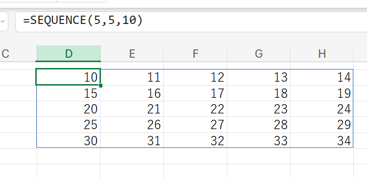
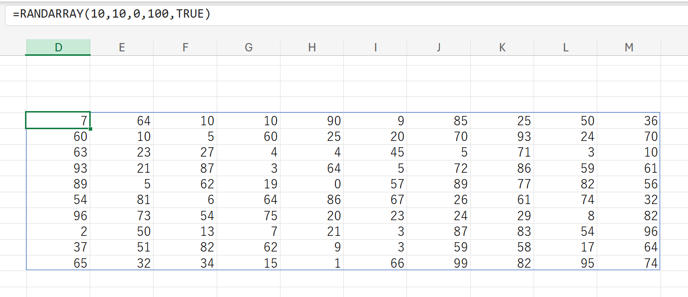
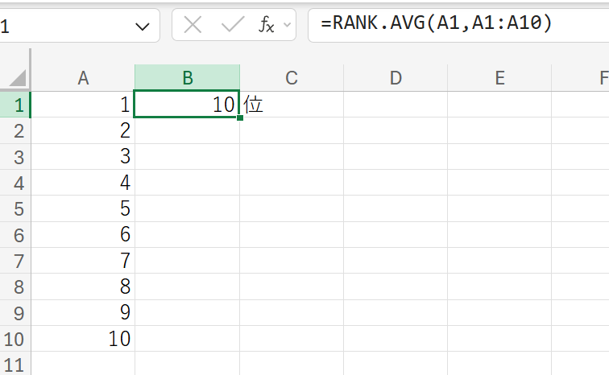

Excel関数まとめ
数値を合計する
=SUM()
計算例 sum(60,30,10) 数値60 30 10の合計を計算する
条件を指定して数値を合計する
=SUMIF(検索範囲,検索条件,合計範囲)
計算例 SUMIF(商品名,'1商品A'',売上高） セル範囲[商品名]の[商品A]の行(または列)に対応するセ ル範囲[売上高]の数値を合計する。
複数の条件を指定して数値を合計する
=SUMIFS(合計範囲,検索範囲1,検索条件1[,検索範囲2,検索条件2,....])
計算例 SUMIFS(売上高,商品名,商品名,出荷日,'出荷日付') セル範囲[商品名]の[商品A]の行(または列)であってかつ、 セル範囲[出荷日]の[出荷日付]の行(または列)に対応する セル範囲[売上高]の数値の合計を求める。
様々な集計値を求める
=SUBTOTAL(集計方法,範囲1[,範囲2，…])
計算例 BTOTAL(1,データ表） セル範囲の平均値(集計方法：1）を求める。 集計方法 1)AVERAGE 平均値を求める 2)COUNT 数値が入っているセルの個数を数える 3)COUNTA 空白以外のセルの個数を数える 4)MAX 最大値を求める 5)MIN 最小値を求める 6)PRODUCT 指定した数値の積（掛け算）を求める 7)STDEV 標本の標準偏差を求める 8)STDEVP 母集団の標準偏差を求める 9)SUM 合計を求める 10)VAR 標本の分散を求める 11)VARP 母集団の分散を求める 上位互換あり =AGGREGATE() ※ 公式参照
小数点以下を切り捨てる
=INT(数値)
計算例INT(12.3) 数値［123]の小数部を切り捨てて、整数部［12]を求める。
桁数を指定して切り捨てる
=TRUNC(数値,桁数)
計算例TRUNC(12.345,1） 数値［12.345]を小数点第2位で切り捨てて、小数第1位ま での数値［12.3]を求める。
指定桁数で四捨五入する
=ROUND(数値,桁数)
計算例ROUND(12345,-2） 数値［12345]を十の ［12300]を返す。
指定桁数に切り上げる
=ROUNDUP(数値,桁数)
計算例ROUNDUP(12.345,1) 数値[12.345]を小数点第２位で切り上げて、 小数点第１位までの数値[12.4]をもとめる
指定桁数に切り下げる
=ROUNDDOWN(数値,桁数)
計算例ROUNDDOWN(12345,-2) 数値[12345]を十の位で切り捨てて、100単位の数値 [12300]を求める
偶数に切り上げる
=EVEN(数値)
計算例EVEN(123.45) 数値[123.45]を最も近い偶数に切り上げて、 [124]を求める。
奇数に切り上げる
=ODD(数値)
計算例ODD(123.45) 数値[123.45]を最も近い奇数に切り上げて、 [125]を求める。
商を求める
=QUOTIENT(数値,除数)
計算例QUOTIENT(12345,100) [12345]を100で割って、商[123]をもとめる
余りを求める
=MOD(数値,除数)
計算例MOD(12345,100) [12345]を100で割って、余り[45]をもとめる
n進数を10進数に変換する
=DECIMAL(文字列,基数)
計算例DECIMAL("FF",16)
16進数の[FF]を10進数の[255]に変換する
10進数をn進数に変換する
=BASE(文字列,基数)
計算例BASE(123,16) 10進数の[123]を16進数の[7B]に変換する
絶対値を求める
=ABS(数値)
計算例ABS(-10) 数値[-10]の絶対値[10]を返す
数値の正負を調べる
=SIGN(数値)
計算例SIGN(-10) 数値[-10]の符号[-]を示す[-1]を返す 正の数: 1 0の時: 0 負の数:-1
自然対数の底のべき乗を求める
=EXP(数値)
計算例EXP(2) 数値[2]の自然対数の底[7.389056098930650]を返す
自然対数を求める
=LN(数値)
計算例LN(2) 数値[2]の自然対数[0.693147181]を返す
べき乗を求める
=POWER(数値,指数)
計算例POWER(2,8) 数値[2]の指数[8]乗である[256]を返す
指定数値を底とする対数を求める
=LOG(数値,底)
計算例LOG(128,2) 数値[128]の2を底とする対数[7]を返す
0以上1未満の実数の乱数を生成する
=RAND()
計算例RAND() 0以上1未満の乱数を返す
整数の乱数を生成する
=RANDBETWEEN(最小値,最大値)
計算例RANDBETWEEN(1,10) [1]以上[10]未満の乱数を生成する
連続した数値の入った配列(表)を作成する
=SEQUENCE(行,[,列][,開始][,目盛り])
計算例SEQUENCE(5,5,10)

乱数の入った配列(表)を作成する
=RANDARRAY([行][,列][,最小][,最大][,整数])
計算例RANDARRAY(10,10,0,100,TRUE) TRUE:整数 FALSE:実数

数値の平均値を求める
=AVERAGE(数値1,数値2....)
=AVERAGEA(数値1,数値2....) ※ 論理値も含める 0/1 欠席／出席など
平均値を算出する
条件を指定して平均値を求める
=AVERAGEIF(検索範囲,検索条件,平均範囲)
計算例AVERAGEIF(住所,"東京",年齢) セル範囲[住所]の[東京]の行(または列)に対応する セル範囲[年齢]の数値を平均する
数値の最大値を求める
=MAX(数値1,数値2....)
=MAXA(数値1,数値2....)※ 論理値も含める 0/1 欠席／出席など
最大値を求める
数値の最小値を求める
=MIN(数値1,数値2....)
=MINA(数値1,数値2....)※ 論理値も含める 0/1 欠席／出席など
最小値を求める
数値の中央値を求める
=MEDIAN(数値1,数値2)
中央値を求める
数値の最頻値を求める
=MODE.SNGL(数値1,数値2)
最頻値を求める
複数の数値の最頻値を求める
=MODE.MULT(数値1,数値2)
複数の最頻値を求める
数値などの個数を求める
=COUNT(値1[値2,...])
引数としてセル範囲を指定した場合、COUNT関数は｢数値 （シリアル値を含む)が入力されているセルの数｣を数えます。
=COUNTA(数値1,数値2....)※ 論理値も含める 0/1 欠席／出席など
空白セルの個数を求める
=COUNTBLANK(範囲)
空白セルの個数を求める
順位を求める
=RANK.AVG(数値,範囲,[順序])
空白セルの個数を求める 順序 0または省略:降順 1:昇順

k番目に大きな値を求める
=LARGE(配列,k)
[配列]の中で[k]番目におおきな値を求める
k番目に小さな値を求める
=SMALL(配列,k)
[配列]の中で[k]番目に小さな値を求める
四分位数を求める
=QUARTILE.INC(配列,戻り値)
戻り値 0:最小値 1:25% 2:中央値 3:75% 4:最大値
不編分散を求める
=VAR.S(数値1,[数値2,...])
=VARA(数値1,[数値2,...]) ※ 論理値も含める 0/1 欠席／出席など
分散は、データの集まりの(平均値からの)｢散らばりの程度」 を調べる二次代表値です。個々のデータと平均値の差をそれ ぞれ2乗して、各値の合計をデータの個数で割って求めます。
平均偏差を求める
=AVEDEV(数値1,[数値2,...])
AVEDEV関数は、平均偏差すなわち｢データ全体の平均値 に対する個々のデータの絶対偏差の平均｣を求めます。平均 偏差は､データと次元が同じなので､標準偏差より手軽にデー タのばらつきを調べることができます。平均偏差が大きいほ ど、データのばらつきが大きいものとみなされます。